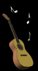

(Para ouvir a música clique aqui)
(Para ouvir a música clique aqui) "MISSA DE SANTA CLARA"
Letra e Música: Frei Antonio Fernando Fabretti


(Para ouvir a música clique aqui)
CANTO DE ENTRADA
As flores cantam; hoje é primavera,
Correm nos campos rios a sorrir.
O Céu e o mar vêm dar as mãos,
Todo o universo hoje se faz canção.
(Refrão) Louvor e glória a Ti, SENHOR,
Ó DEUS de Amor! (2 vezes)
Quem se fez pobre por JESUS na terra,
Acumulou tesouros lá no Céu,
Mostrou, enfim, que o seu viver,
Se consumia no infinito SER.

(Para ouvir a música clique aqui)
CANTO DE MEDITAÇÃO
Uma semente cai na terra,
E o nosso PAI a faz crescer;
Assim também fomos chamados,
Crescer no amor e florescer.
(Refrão) O Amor é dom total do PAI,
Que faz crescer, multiplicar!(bis)
Hoje nos fala uma “plantinha”,
Que em seu JESUS, enfim, cresceu,
Eis que deixando mil sementes,
Voou feliz ao PAI do Céu.
(Refrão) O Amor é dom total, do PAI,
Que faz crescer, multiplicar!(bis)